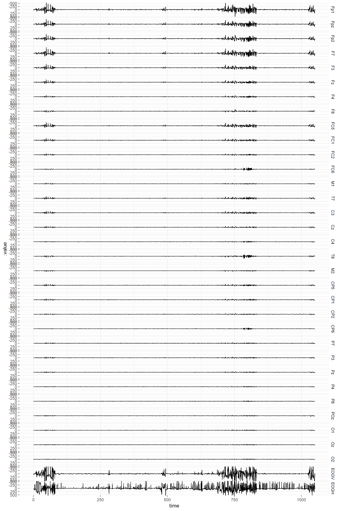
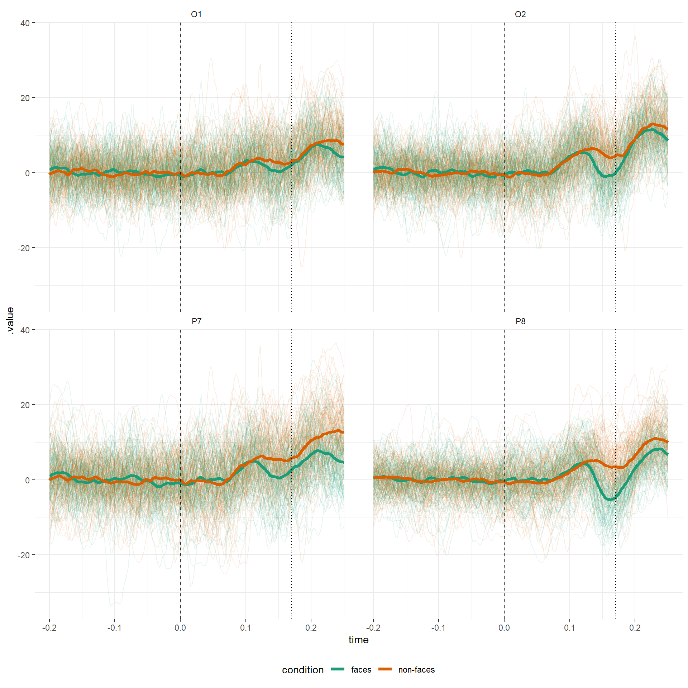
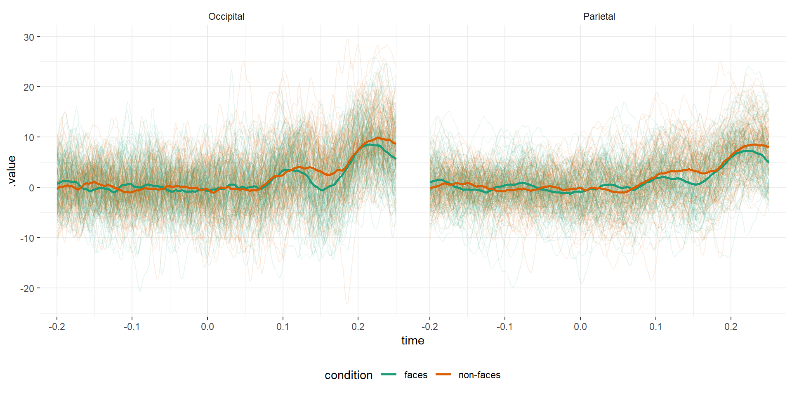
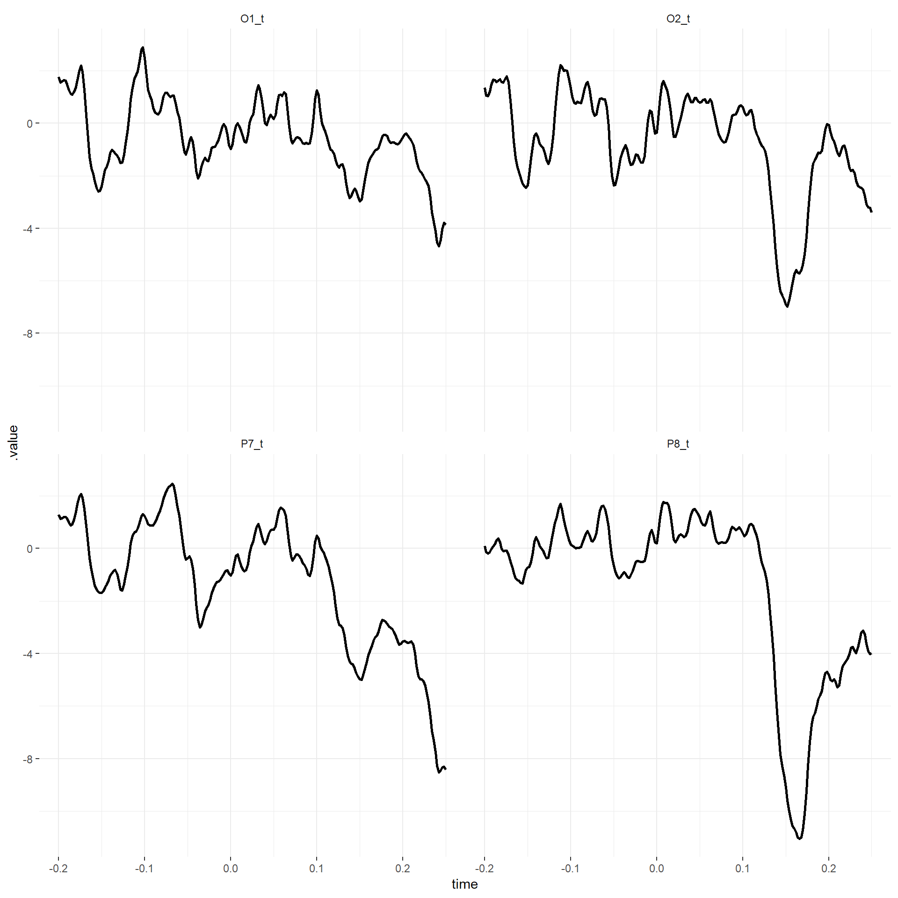

Manipulating a clean EEG file exported from BrainVision 2.0
Bruno Nicenboim
2018-10-23
Source:vignettes/brainvision_files.Rmd
brainvision_files.Rmdeeguana provides a framework for manipulating EEG data with dplyr-based function (e.g., mutate, filter, summarize) extended to a new class eeg_lst. In addition, it provides other EEG-specialized functions, and ggplot wrapper functions. The new class is inspired by tidyverse principles but it’s not really “tidy” (due to space considerations), it’s a list of (i) a wide table (signal_tbl) that contains the signal amplitudes at every sample point of the EEG, (ii) an events table with information about markers (or triggers), blinks and other exported information, and (iii) a long table with experimental information, such as participant (recording), conditions, etc.
Here, I exemplify the use of eeguana with (pre-processed) EEG data from BrainVision 2.0. The data belong to a simple experiment where a participant was presented 100 faces and 100 assorted images in random order. The task of the experiment was to mentally count the number of faces.
First we download the data:
download.file("https://www.ling.uni-potsdam.de/~nicenboim/files/faces.vhdr",
"faces.vhdr", mode="wb")
download.file("https://www.ling.uni-potsdam.de/~nicenboim/files/faces.vmrk",
"faces.vmrk", mode="wb")
download.file("https://www.ling.uni-potsdam.de/~nicenboim/files/faces.dat",
"faces.dat", mode="wb")BrainVision 2.0 exports three files: faces.vhdr, faces.vmrk, and faces.dat. The file faces.vhdr contains the metadata and links to the other two files, faces.vmrk contains the triggers and other events in the samples, and faces.dat contains the signals at every sample for every channel recorded.
library(eeguana)We first need to read the data:
faces <- read_vhdr("faces.vhdr")
#> # Data from faces.dat was read.
#> # Data from 1 segment(s) and 34 channels was loaded.
#> # Object size in memory 147 MBThe function read_vhdr creates a list with data frames for the signal, events, segments information, and incorporates in its attributes generic EEG information.
faces
#> $signal
#> # A tibble: 525,207 x 36
#> .id .sample_id Fp1 Fpz Fp2 F7 F3 Fz F4 F8
#> <int> <int> <dbl> <dbl> <dbl> <dbl> <dbl> <dbl> <dbl> <dbl>
#> 1 1 1 -4.27 -12.5 -8.51 5.81 0.799 -3.79 -7.00 -9.59
#> 2 1 2 -5.99 -11.3 -8.30 4.47 -0.456 -3.92 -7.31 -10.2
#> 3 1 3 -6.58 -9.33 -7.68 3.71 -1.84 -3.69 -7.33 -10.6
#> 4 1 4 -5.90 -6.18 -6.08 3.95 -2.63 -2.27 -6.54 -10.5
#> 5 1 5 -5.35 -2.58 -3.96 4.62 -2.96 -0.172 -5.45 -10.3
#> 6 1 6 -6.19 0.246 -2.29 4.85 -3.32 1.66 -4.58 -10.3
#> 7 1 7 -7.80 1.79 -1.50 4.27 -3.77 2.81 -4.03 -10.6
#> 8 1 8 -8.61 2.21 -1.18 3.49 -4.31 3.15 -3.71 -10.6
#> 9 1 9 -7.93 1.64 -0.730 3.28 -4.79 2.71 -3.40 -9.60
#> 10 1 10 -6.56 -0.0265 -0.457 3.81 -4.92 1.63 -3.23 -7.73
#> # ... with 525,197 more rows, and 26 more variables: FC5 <dbl>, FC1 <dbl>,
#> # FC2 <dbl>, FC6 <dbl>, M1 <dbl>, T7 <dbl>, C3 <dbl>, Cz <dbl>,
#> # C4 <dbl>, T8 <dbl>, M2 <dbl>, CP5 <dbl>, CP1 <dbl>, CP2 <dbl>,
#> # CP6 <dbl>, P7 <dbl>, P3 <dbl>, Pz <dbl>, P4 <dbl>, P8 <dbl>,
#> # POz <dbl>, O1 <dbl>, Oz <dbl>, O2 <dbl>, EOGV <dbl>, EOGH <dbl>
#>
#> $events
#> # A tibble: 4,276 x 6
#> .id type description .sample_0 .size .channel
#> <int> <chr> <chr> <int> <int> <chr>
#> 1 1 New Segment <NA> 1 1 <NA>
#> 2 1 Bad Interval Bad Min-Max 2158 738 Fp1
#> 3 1 Bad Interval Bad Min-Max 2161 731 Fp2
#> 4 1 Bad Interval Bad Min-Max 2162 729 Fpz
#> 5 1 Bad Interval Bad Min-Max 2173 689 F8
#> 6 1 Bad Interval Bad Min-Max 2181 675 F4
#> 7 1 Bad Interval Bad Min-Max 2182 676 Fz
#> 8 1 Bad Interval Bad Min-Max 2306 549 F3
#> 9 1 Bad Interval Bad Min-Max 2899 397 Fp1
#> 10 1 Bad Interval Bad Min-Max 2901 392 Fpz
#> # ... with 4,266 more rows
#>
#> $segments
#> # A tibble: 1 x 3
#> .id recording segment
#> <int> <chr> <int>
#> 1 1 faces.vhdr 1
#>
#> attr(,"class")
#> [1] "eeg_lst"It provides a summary:
summary(faces)
#> # EEG data (eeg_lst) from the following channels:
#> # A tibble: 34 x 11
#> type .name .reference resolution unit radius theta phi .x .y
#> <chr> <chr> <chr> <chr> <chr> <int> <int> <int> <dbl> <dbl>
#> 1 Ch1 Fp1 avim12 "" µV 1 -90 -72 -0.31 0.95
#> 2 Ch2 Fpz avim12 "" µV 1 90 90 0 1
#> 3 Ch3 Fp2 avim12 "" µV 1 90 72 0.31 0.95
#> 4 Ch4 F7 avim12 "" µV 1 -90 -36 -0.81 0.59
#> 5 Ch5 F3 avim12 "" µV 1 -60 -51 -0.55 0.67
#> 6 Ch6 Fz avim12 "" µV 1 45 90 0 0.71
#> 7 Ch7 F4 avim12 "" µV 1 60 51 0.55 0.67
#> 8 Ch8 F8 avim12 "" µV 1 90 36 0.81 0.59
#> 9 Ch9 FC5 avim12 "" µV 1 -69 -21 -0.87 0.33
#> 10 Ch10 FC1 avim12 "" µV 1 -31 -46 -0.36 0.37
#> # ... with 24 more rows, and 1 more variable: .z <dbl>
#> # Sampling rate: 500 Hz.
#> # Size in memory: 147 MB.
#> # Summary of segments
#> # A tibble: 1 x 2
#> recording segment_n
#> <chr> <int>
#> 1 faces.vhdr 1
#> # Summary of events
#> # A tibble: 13 x 3
#> # Groups: type, description [13]
#> type description n
#> <chr> <chr> <int>
#> 1 Bad Interval Bad Min-Max 3734
#> 2 Bad Interval Multiple 105
#> 3 New Segment <NA> 1
#> 4 Stimulus s101 1
#> 5 Stimulus s102 1
#> 6 Stimulus s111 1
#> 7 Stimulus s121 1
#> 8 Stimulus s122 1
#> 9 Stimulus s130 200
#> 10 Stimulus s5 1
#> 11 Stimulus s70 100
#> 12 Stimulus s71 100
#> 13 UserDefined Blink 30Furthermore, it allows for quick visualization.
plot(faces)
#> # Downsampling from 500Hz to 2.08333333333333Hz.
#> # Object size in memory 820 kBThe standard plots can be slightly customized using ggplot layers.
plot(faces) + coord_cartesian(ylim = c(-500,500))
#> # Downsampling from 500Hz to 2.08333333333333Hz.
#> # Object size in memory 820 kB
Some intervals were marked as “bad” by BrainVision, and so we’ll remove them from the data. We’ll also segment and baseline the data. In this experiment, the trigger “s70” was used for faces and “s71” for no faces. We’ll segment the data using these two triggers.
faces_segs <- faces %>%
segment(description %in% c("s70", "s71"),
lim = c(-.2,.25)) %>%
event_to_ch_NA(type == "Bad Interval") %>%
ch_baseline()
#> # Total of 200 segments found.
#> # Object size in memory 12.7 MB after segmentation.We can also edit the segmentation information and add more descriptive labels. eeguana has wrappers for many dplyr commands for the EEG data. These commands always return an entire eeg_lst object so that they can be piped using magrittr’s pipe, %>%.
faces_segs_some <- faces_segs %>%
mutate(condition =
if_else(description == "s70", "faces", "non-faces")) %>%
select(-type)
faces_segs_some
#> $signal
#> # A tibble: 45,200 x 36
#> # Groups: .id [200]
#> .id .sample_id Fp1 Fpz Fp2 F7 F3 Fz F4 F8
#> * <int> <int> <dbl> <dbl> <dbl> <dbl> <dbl> <dbl> <dbl> <dbl>
#> 1 1 -99 3.00 3.82 1.68 5.35 8.53 4.73 3.19 -0.109
#> 2 1 -98 4.65 5.97 2.90 6.23 12.0 6.16 3.99 -0.876
#> 3 1 -97 5.64 7.73 3.36 6.15 12.6 7.13 4.27 -2.20
#> 4 1 -96 4.89 7.09 1.56 4.68 10.2 6.34 3.26 -3.93
#> 5 1 -95 1.68 3.59 -2.12 1.82 6.47 4.63 1.39 -5.12
#> 6 1 -94 -1.11 0.194 -4.62 -1.04 4.09 3.79 0.175 -4.62
#> 7 1 -93 0.935 0.837 -2.97 -1.40 4.63 4.44 0.815 -2.31
#> 8 1 -92 5.51 4.36 1.25 0.303 7.07 5.85 2.76 0.464
#> 9 1 -91 7.31 6.30 4.20 1.38 8.46 7.05 4.70 2.63
#> 10 1 -90 6.71 5.89 5.12 1.61 7.65 7.56 5.98 4.03
#> # ... with 45,190 more rows, and 26 more variables: FC5 <dbl>, FC1 <dbl>,
#> # FC2 <dbl>, FC6 <dbl>, M1 <dbl>, T7 <dbl>, C3 <dbl>, Cz <dbl>,
#> # C4 <dbl>, T8 <dbl>, M2 <dbl>, CP5 <dbl>, CP1 <dbl>, CP2 <dbl>,
#> # CP6 <dbl>, P7 <dbl>, P3 <dbl>, Pz <dbl>, P4 <dbl>, P8 <dbl>,
#> # POz <dbl>, O1 <dbl>, Oz <dbl>, O2 <dbl>, EOGV <dbl>, EOGH <dbl>
#>
#> $events
#> # A tibble: 200 x 6
#> .id type description .sample_0 .size .channel
#> <int> <chr> <chr> <int> <int> <chr>
#> 1 1 Stimulus s70 1 1 <NA>
#> 2 2 Stimulus s71 1 1 <NA>
#> 3 3 Stimulus s71 1 1 <NA>
#> 4 4 Stimulus s71 1 1 <NA>
#> 5 5 Stimulus s70 1 1 <NA>
#> 6 6 Stimulus s71 1 1 <NA>
#> 7 7 Stimulus s71 1 1 <NA>
#> 8 8 Stimulus s70 1 1 <NA>
#> 9 9 Stimulus s70 1 1 <NA>
#> 10 10 Stimulus s70 1 1 <NA>
#> # ... with 190 more rows
#>
#> $segments
#> # A tibble: 200 x 5
#> # Groups: .id [200]
#> .id recording segment description condition
#> <int> <chr> <int> <chr> <chr>
#> 1 1 faces.vhdr 1 s70 faces
#> 2 2 faces.vhdr 2 s71 non-faces
#> 3 3 faces.vhdr 3 s71 non-faces
#> 4 4 faces.vhdr 4 s71 non-faces
#> 5 5 faces.vhdr 5 s70 faces
#> 6 6 faces.vhdr 6 s71 non-faces
#> 7 7 faces.vhdr 7 s71 non-faces
#> 8 8 faces.vhdr 8 s70 faces
#> 9 9 faces.vhdr 9 s70 faces
#> 10 10 faces.vhdr 10 s70 faces
#> # ... with 190 more rows
#>
#> attr(,"class")
#> [1] "eeg_lst"With some “regular” ggplot skills, we can create customized plots. plot_gg downsamples the signals (by default), and converts them to a long-format data frame that is feed into ggplot object. This object can then be customized.
faces_segs_some %>%
select(O1, O2, P7, P8) %>%
plot_gg(faces_segs_some) +
geom_line(alpha = .1, aes(group = .id, color = condition)) +
stat_summary(fun.y = "mean", geom ="line", alpha = 1, size = 1.5,
aes(color = condition)) +
facet_wrap(~ channel) +
geom_vline(xintercept = 0, linetype = "dashed") +
geom_vline(xintercept = .17, linetype = "dotted") +
theme(legend.position = "bottom") 
The motivation for manipulating the data in the eeg_lst format and not transforming them directly to a data frame has to do with size considerations. In this case, the original file was 149 MB, converting it to a long format entails a lot of repetition and generates an object of 786 MB. While this is still ok here, a long format quickly becomes prohibitive in real settings with longer recordings and with several subjects.
We can see here the N170 component in the faces condition for the average trial on a single participant. We can investigate the signal by averaging the channels of the occipital and parietal lobes using the capabilities inherited from dplyr, and the special function, chs_mean, a wrapper for rowMeans, which takes as arguments the relevant channels and whether missing values should be omitted from the calculations.
faces_segs_some %>% ungroup(faces_segs_some) %>%
transmute(Occipital = chs_mean(O1, O2, Oz, na.rm = TRUE),
Parietal = chs_mean(P3, P4, P7, P8, Pz, na.rm = TRUE)) %>%
plot_gg() +
geom_line(alpha = .1, aes(group = .id, color = condition)) +
stat_summary(fun.y = "mean", geom ="line", alpha = 1, size = 1,
aes(color = condition)) +
facet_wrap(~ channel) +
theme(legend.position = "bottom") 
Another possibility is to create a topographic plot of the two conditions, by first making segments that include only the interval .1-.2 s after the onset of the stimuli.
faces_segs_some %>% ungroup() %>%
filter(between(.sample_id,20,50)) %>%
group_by(condition) %>%
plot_topo()
For more specialized plots or analyses, it might be necessary to extract the data in long data frame format first. For example, here, we visualize independent t-tests (or some other statistics) at every electrode and time point.
df <- faces_segs_some %>%
select(O1, O2, P7, P8) %>%
as_tibble %>%
# We can use regular dplyr functions now
group_by(channel, time) %>%
summarize(
`t-value` = t.test(amplitude[condition == "faces"],
amplitude[condition == "non-faces"])$statistic)
df
#> # A tibble: 904 x 3
#> # Groups: channel [?]
#> channel time `t-value`
#> <chr> <dbl> <dbl>
#> 1 O1 -0.2 1.77
#> 2 O1 -0.198 1.56
#> 3 O1 -0.196 1.59
#> 4 O1 -0.194 1.65
#> 5 O1 -0.192 1.62
#> 6 O1 -0.19 1.49
#> 7 O1 -0.188 1.28
#> 8 O1 -0.186 1.12
#> 9 O1 -0.184 1.10
#> 10 O1 -0.182 1.20
#> # ... with 894 more rowsThen we just load the data frame into ggplot.
ggplot(df, aes(x = time, y = `t-value`)) + geom_line() +
facet_wrap(~ channel) 
However, this can be also done in the without transforming the eeg_lst object:
faces_segs_some_t <-
faces_segs_some %>%
select(O1, O2, P7, P8) %>%
group_by(.sample_id) %>%
summarize_all(funs(t = t.test(.[condition == "faces"],
.[condition == "non-faces"])$statistic))
plot_gg(faces_segs_some_t) +
geom_line(alpha = .1, aes(group = .id)) +
stat_summary(fun.y = "mean", geom ="line", alpha = 1, size = 1) +
facet_wrap(~ channel) +
theme(legend.position = "bottom")